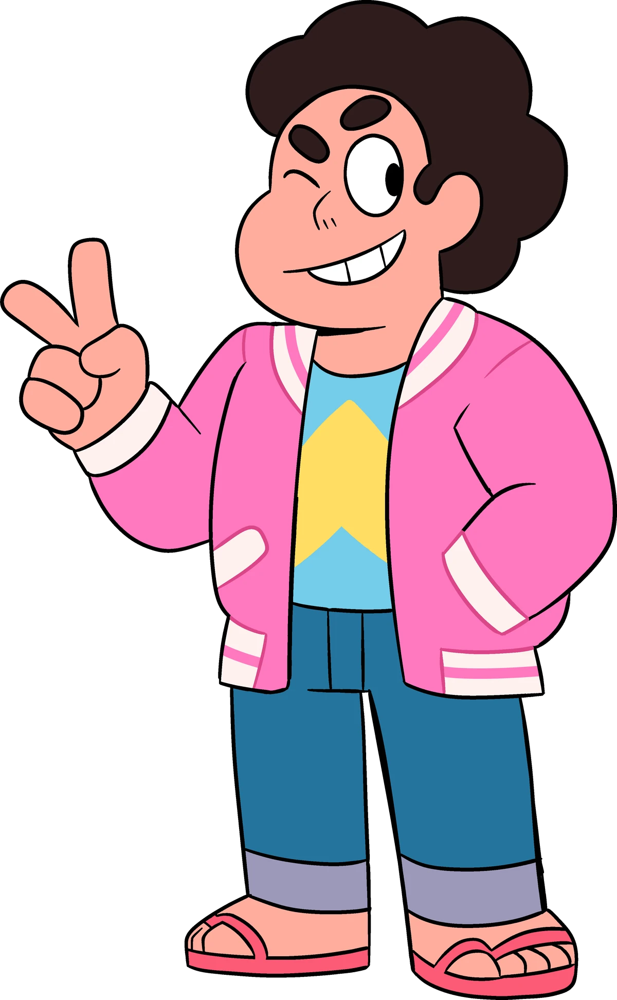

Steven Universe
Nickname: Schtu-ball
Little Man
Steve-O
The Steven
Ste-van
Star Child Jr.
Cutie Pie
Starlight
Species: Hybrid (Gem & Human)
Gender: Male
Age: 13
Birthday: August 15th
Status: Alive
Relatives: Greg (Father)
Rose Quartz (Mother)
Friends: Pearl
Garnet
Amethyst
First Appearance: Pilot
Voice Actor: Zach Callison
Personality:
Steven is a bright, friendly and outgoing kid with a beautiful outlook on life, who loves his home (beach city) and everyone in it. He often breaks into song with his ukulele, telling a story with his music much like his Dad. His compassion is like no one else's in the show but other his dad and the rest of the crystal gems believe he inherited it from his mother, Rose Quartz.Steven treats everyone kindly, rarely getting mad or holding grudges, he tends more towards mediation, even towards enemies later on in the show, he just wants everyone to get along. Steven's role models are those closest to him, the gems, his mother's closest friends; Pearl, Garnet and Amethyst and to Steven the gems are his family. All Steven wants at the start of the show is to be a Crystal gem and help the gems on missions . His potential is revealed when his resourcefulness and confidence come into play despite his young age and his still developing powers.
Abilities:
When fused with others, Steven forms various fusions, such as Stevonnie, Steg, Smoky Quartz, Rainbow Quartz 2.0, Sunstone, and Obsidian.
In terms of skills and abilities:
Intelligence: Steven is a natural problem solver with growing intelligence.
Piloting: He can control Gem technology like his mother's ship.
Driving: Steven has his driver's license.
Multitasking: He can fight and talk simultaneously.
Martial Arts: Steven demonstrates martial arts moves.
Natural Abilities: He can shapeshift, manipulate age, enter a monstrous state, walk on water, and has superhuman strength and durability.
Gem Weaponry Resistance: He's resistant to anti-Gem weapons.
Superhuman Speed: He can move incredibly fast.
Steven's Unique Abilities: These include his shield proficiency, healing, resurrection, corruption reversal, shatter reversal, mind-related powers, shape alteration of his bubble, and other unique powers in his pink state.
The pink state gives Steven enhanced strength, speed, agility, a sonic scream, and the ability to create powerful shields, manipulate his body size, generate hexagonal force fields, augment his powers, regulate his descent, achieve flight or levitation, and broadcast empathic telepathy. Additionally, he can give life to plants.
Pearl

Nickname: P
Pierogi
Princess Nose
Renegade Pearl
Earl
Species: Gem
Gender: Female
Age: N/A
Birthday: N/A
Status: Alive
Relatives: N/A
Friends: Garnet
Amethyst
Rose
Steven
All gems
First Appearance: Pilot
Voice Actor: Deedee Mango Hall
Personality:
Pearl is and has been from the start a perfectionist at her core and is widely known for her knowledge and passion for organization. Despite her strict lifestyle, she battles with low self-esteem and an inferiority complex, seeking validation from others. Her first struggle was adapting to Earth's social customs, and it becomes a running joke at times. She is dedicated to protecting humanity due to her love and loyalty to her leader, Rose Quartz. Over the course of the show, Pearl's character only evolves and she becomes more confident and self-assured. Her journey showcases her remarkable resilience and determination to overcome personal insecurities, making her an enduring and multi-dimensional character in the series.
Abilities:
When fused with others, Pearl creates various fusion forms, such as Opal, Rainbow Quartz, Sardonyx, Alexandrite, Obsidian, and Rainbow Quartz 2.0
In terms of her skills and abilities:
Spear Proficiency: Pearl wields a pearlescent spear with grace and skill.
Dual Wielding: She's capable of wielding dual spears, indicating ambidexterity.
Energy Projection: Pearl can fire arrow-like energy blasts from her spear.
Swordsmanship: Her expertise includes a straight-bladed saber and precise parries.
Engineering: Pearl displays high mechanical engineering skills, from robot construction to rocket building.
Gem-tech Interfacing: She can control Gem technology, including the Gem Warship and escape pods.
Piloting: Pearl can fly Homeworld ships like the Gem Warship and Pink Diamond's ship.
Driving: She's a skilled driver and even races proficiently.
Photokinesis: Pearl uses her gemstone to emit light.
Mentoring: Pearl is an effective teacher, as seen in her homeschooling of Steven.
Pearl's unique abilities encompass:
Holographic Projection: She projects holographic images from her gemstone.
Self-Duplication: Pearl can replicate herself into hologram-like clones.
Psammokinesis: Manipulating sand to create figurines.
Nephelokinesis: Channeling clouds to manipulate mist and visibility.
Interdimensional Storage: Storing objects inside her gemstone.
Levitation: While controlled by White Diamond, she can suspend her body.
Garnet

Nickname: Perma-fusion
Power couple
Captain Square
Square head
Mom Universe
G
Species: Gem
Gender: Female
Age: N/A
Birthday: N/A
Status: Alive
Relatives: N/A
Friends: Pearl
Amethyst
Rose
Steven
All gems
First Appearance: Pilot
Voice Actor: Estelle
Personality:
Garnet, the leader of the Crystal Gems, she's a go with the flow kind of gem, her future-sight allows her to stay calm and collected about the future and missions rather than overthinking. She maintains a calm composure, balancing both Ruby's passion and Sapphire's logic. She can be your worst enemy and your best friend depending if you're on her side or not. Garnet values fusion as sacred and is deeply upset by it's misuse. She's committed to her role as a leader and gives her all for the cause.
Abilities:
When fused with others, Garnet creates various fusion forms, such as Sugilite, Sardonyx, Alexandrite, Obsidian, Sunstone, and Obsidian with Steven.
Gauntlet Proficiency: Summoning gauntlets and demonstrating high proficiency in hand-to-hand combat.
Rocket Gauntlets: Using her gauntlets as projectiles and launching them.
Weapon Size Augmentation: Increasing the size of her gauntlets to enhance their damage.
Shock Wave Emission: Creating shock waves by pounding her gauntlets into objects.
Photokinesis: Emitting light, a shared ability with certain other Gems.
Gem Storage: Materializing various items from her gemstone.
Garnet's unique abilities encompass:
Future Vision: Seeing multiple future outcomes and probabilities with her third eye.
Temporary Power Transfer: Temporarily sharing her future vision ability through lip-to-forehead contact.
Heat Resistance: Extreme tolerance to heat due to Ruby's thermo-regulation.
Enhanced Calculations: Sensing structural integrity, although the nature of this power is uncertain.
Electrokinesis: Generating and controlling electricity, a combination of Ruby's pyrokinesis and Sapphire's cryokinesis.
Electric Resistance: Being impervious to electricity, allowing her to deflect and manipulate it.
Electric Jump: Releasing electricity upon impact with the ground.
Super Speed: Displaying rapid movements and reactions, inherited from Sapphire.
Amethyst

Nickname: Runt
Purple girl
8XM
Purple Puma
Amy
Species: Gem
Gender: Female
Age: N/A
Birthday: N/A
Status: Alive
Relatives: N/A
Friends: Garnet
Pearl
Rose
Steven
All gems
First Appearance: Pilot
Voice Actor: Michaela Dietz
Personality:
Amethyst is a carefree and fun-loving Gem who enjoys human activities, like eating and sleeping. She loves wrestling and plays pranks, usually on Pearl. However, her carefree nature masks deep self-hatred, stemming from her birth in the Prime Kindergarten and feeling inadequate compared to Garnet and Pearl. This insecurity occasionally leads to reckless behavior, but over time, she matures and gains self-confidence with the help of Steven and her interactions with other Gems, eventually finding her purpose in helping other Gems discover theirs.
Abilities:
Amethyst possesses standard Gem abilities and traits, despite her smaller stature. She can fuse with other Gems to form new fusions like Opal, Sugilite, Alexandrite, Smoky Quartz, and Obsidian.
In terms of her skills and abilities:
Whiplash Proficiency: Amethyst is highly skilled with her whip, which she can use to attack, entangle, or grab objects. Her upgraded morning star-inspired flail enhances her abilities.
Shapeshifting: Amethyst excels at shapeshifting, using it for combat, transportation, and various tasks, though she has time limits and struggles under pressure.
Martial Arts: She relies on martial arts and wrestling techniques in combat, using her physical prowess to tackle threats.
Musical Talent: Amethyst can play the drums.
Unique Abilities include:
Spin Dash: She can rapidly roll into a ball-like shape to attack enemies.
Homing Attack: Amethyst can home in on nearby enemies while spin dashing.
Whiplash Spin Dash: This powerful move combines her spin dash with fiery whips, causing a violet explosion.
Hair-Blade: She uses her hair as a blade to slash at enemies, severing them.
Enhanced Digestion: Amethyst can consume and digest various materials without issue, including non-food items.
Fire Burp: She can burp fire after consuming cooking oil.
Amethyst also has a few clandestine abilities that make her a versatile and resourceful Gem, akin to Garnet.